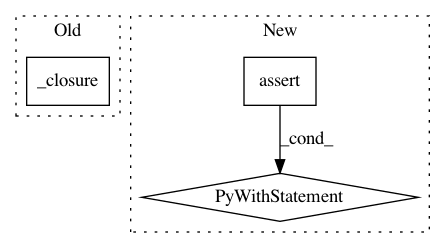

12a88bb285991a83f72be9fec145b9dab4631dce,skbio/stats/tests/test_composition.py,CompositionTests,test_clr,#CompositionTests#,127
Before Change
npt.assert_allclose(cmat,
np.log(A / np.exp(np.log(A).mean())))
cmat = clr(_closure(self.data6))
A = np.array([.2, .2, .6])
B = np.array([.4, .4, .2])
After Change
clr(self.data1)
with self.assertRaises(ValueError):
clr(self.bad1)
with self.assertRaises(ValueError):
clr(self.bad2)
def test_centralize(self):
cmat = centralize(_closure(self.data1))
npt.assert_allclose(cmat,
np.array([[0.22474487, 0.22474487, 0.55051026],
In pattern: SUPERPATTERN
Frequency: 3
Non-data size: 3
Instances
Project Name: biocore/scikit-bio
Commit Name: 12a88bb285991a83f72be9fec145b9dab4631dce
Time: 2015-03-12
Author: jamietmorton@gmail.com
File Name: skbio/stats/tests/test_composition.py
Class Name: CompositionTests
Method Name: test_clr
Project Name: biocore/scikit-bio
Commit Name: 12a88bb285991a83f72be9fec145b9dab4631dce
Time: 2015-03-12
Author: jamietmorton@gmail.com
File Name: skbio/stats/tests/test_composition.py
Class Name: CompositionTests
Method Name: test_closure
Project Name: biocore/scikit-bio
Commit Name: 12a88bb285991a83f72be9fec145b9dab4631dce
Time: 2015-03-12
Author: jamietmorton@gmail.com
File Name: skbio/stats/tests/test_composition.py
Class Name: CompositionTests
Method Name: test_centralize